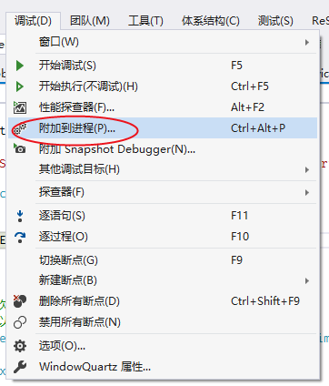

原文连接:https://www.cnblogs.com/i3yuan/p/11373527.html
前言：
在上一章中，我们通过利用控制台实现定时任务调度，已经大致了解了如何基于Quartz.Net组件实现任务，至少包括三部分：job(作业），trigger（触发器），scheduler（调度器）。其中job是需要在一个定时任务中具体执行的业务逻辑，trigger通过规定job何时并按照何种指定的规则进行执行，最后job和trigger会被注册到scheduler中，利用scheduler（调度器）来负责协调job和trigger的搭配运行。
你是否在工作中会遇到需要软件具有自动执行任务的功能，但是又不希望直接启动软件来手动执行任务？
这个时候，我们可以考虑用到window服务，基于Quartz.Net组件定时轮询数据库同步，定时邮件通知，定时处理数据等功能。
开始：
首先创建一个windows服务项目

在创建好的项目中，Service1.cs文件中点击“单击此处切换到代码视图”切换到代码
这个时候我们可以注意到两个方法：OnStart （服务启动）和 OnStop（服务停止）
/// <summary>
/// 服务启动
/// </summary>
/// <param name="args"></param>
protected override void OnStart(string[] args)
{
} /// <summary>
/// 服务停止
/// </summary>
protected override void OnStop()
{
}一、创建一个scheduler的引用：
ISchedulerFactory schedFact = new StdSchedulerFactory();
IScheduler sched = await schedFact.GetScheduler();二、启动 scheduler：
await sched.Start();三、实现IJob:
SyncJob.cs 实现IJob，在Execute方法里编写要处理的业务逻辑，系统就会按照Quartz的配置，定时处理
[Invoke(Name = "SyncJob", Remark = "Quartz服务", Group = "Quartz服务管理", Begin = "2018-05-01 12:00:00", Interval = 5)]
public class SyncJob : IJob
{
public Task Execute(IJobExecutionContext context)
{
try
{
//每次执行 获取当前时间 输出当前时间
//可以在这里编写每次定时执行需要的方法
LogHelper.SaveLog("输出日志", "在当前时间:" + DateTime.Now + "--上一次执行时间：" + DateTime.Now.AddSeconds(-5));
}
catch (Exception ex)
{
LogHelper.SaveLog(ex);
}
return null;
}
}四、创建trigger：（建立一个某个时间点的触发器，并且每5秒执行一次）
ITrigger trigger = TriggerBuilder.Create()
.WithIdentity("trigger1", "group1") //触发器 组
.WithSimpleSchedule(x => x.WithIntervalInSeconds(5).RepeatForever())
.Build();五、触发器执行任务：
await sched.ScheduleJob(job, trigger);将几个步骤整合后代码如下：
/// <summary>
/// 服务启动
/// </summary>
/// <param name="args"></param>
protected override void OnStart(string[] args)
{
Run().GetAwaiter().GetResult();
LogHelper.SaveLog("服务", "开始");
}
/// <summary>
/// 服务停止
/// </summary>
protected override void OnStop()
{
try
{
if (scheduler != null)
{
scheduler.Shutdown();
}
}
catch (Exception ex)
{
LogHelper.SaveLog(ex);
}
LogHelper.SaveLog("服务", "结束");
}
IScheduler scheduler;
private async Task Run()
{
try
{
NameValueCollection props = new NameValueCollection
{
{ "quartz.serializer.type", "binary" }
};
StdSchedulerFactory factory = new StdSchedulerFactory(props);
scheduler = await factory.GetScheduler();
await scheduler.Start();
Jobs.Jobs.Config(scheduler);
}
catch (SchedulerException ex)
{
LogHelper.SaveLog(ex);
}
}安装
以管理员的身份打开cmd
运行：
间隔5秒执行一次后的效果：
通过日志的方式输出数据，查看效果
附加：
一、删除服务
以管理员的身份打开cmd
二、调试window服务
1）安装并运行服务
2）附加进程

3）在代码中加入断点进行调试
总结：
1.当我们在需要用到定时执行任务的时候，可以考虑使用通过window服务加上quartz组件结合的方式，实现对任务的定时执行，这也是在很多场景中可以实现的方法，比如：定时轮询数据库同步，定时邮件通知，定时处理数据等
2.通过管理工具显示当前执行的任务和执行情况，也利用调试工具调试Window服务中遇到的问题。
3.quartz还有更多的用法，可以参考资料：Quartz.Net官方文档 和 Quartz.Net开源地址
4.搜索关注公众号【杂学谷】--回复【定时服务】，可获取源码下载地址内容